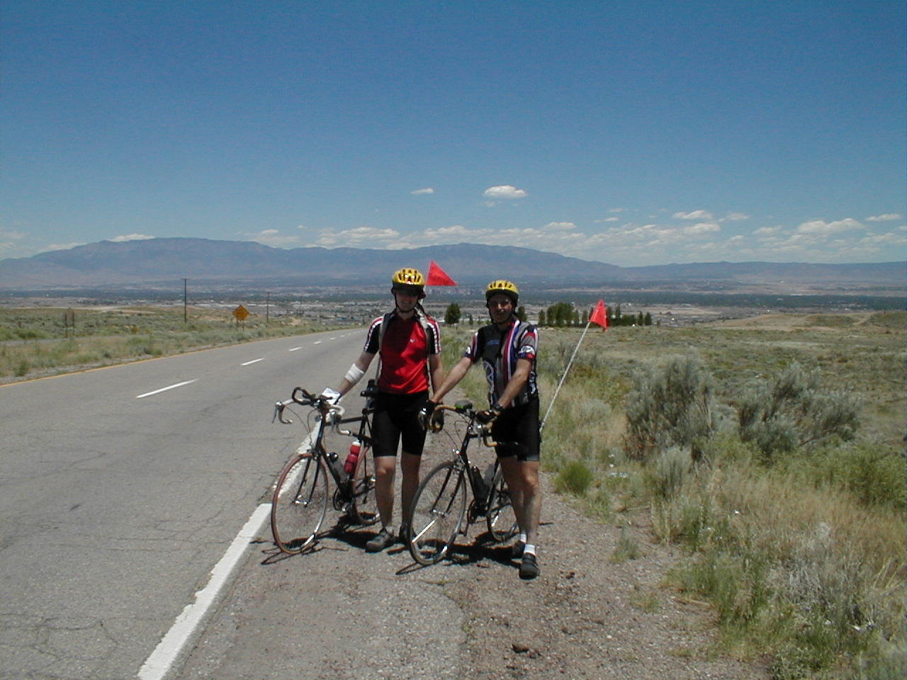

Day 12: May 24, Grants, NM to Albuquerque, NMPrevious Day - Home - Next Day Photo of the DayDad and I on top of the world, overlooking Albuquerque. Keegan's LogDay 12: May 24, Grants, NM to Albuquerque, NM Mileage: 79.72 milesWeather: 60-100 degrees, Sunny, Varying tailwind Vertical Climb: 1600 feet Riding Time: 4:50 Today was tough right from the beginning, I was going around a turn only a half mile out of the hotel when the bike slid out from underneath me. I ended up with some skin missing from my elbow and some road rash on my hip and ankle. The other riders around we very helpful and soon Tracy and Julie we there to help clean and dress the wounds, they had me ready to go in no time. After a little time to rest, I timidly got on my bike to start again on the day's ride. Julie (a staff member) was riding sweep, so she stayed behind us, but she began having some troubles with flat tires. As we were already running late, Julie offered to let dad and I move along, so we sent the sag back to pick her up. I was feeling a lot better by mid-morning (maybe because the Advil had kicked in), so we made good time to the first sag. The scenery was amazing, the hills and cliffs were no longer on the distant horizon, we followed Route 66 which ran right along the side of the red rocks. I wanted to take a picture to post, unfortunately my camera was on the fritz, probably from the fall earlier in the morning. We continued along Route 66 until we reached the first sag. Pat was waiting for us at the first sag, the last of the riders before us had left about 15 minutes before we arrived. We only spent a short time at the sag, as we were eager to make up some lost time. We headed for I-40, which we followed all the way to the second sag. The terrain grew a little less flat, we would descend a ridge and then climb the next one, forming long rolling hills. The ride to the second sag stretched on a bit, but we eventually found the van off exit 140. We stopped at the Dairy Queen for some lunch, dad also got my camera to work again. We took our time as Albuquerque was only 20 miles away, it was over a half hour before we set out, with Julie riding sweep behind us again. We rode I-40 for about 9 miles, then exited to again follow Route 66. Right out of the sag we had a long hill, the grade of the interstate was relatively gentle but the hill stretched for miles. A few more ridges, and then we reached the top of the Rio Grande valley. From the top we could see the entire town of Albuquerque in a panoramic view, and luckily I was able to take a picture of the view this time. The last few miles were spent in a long decent all the way through town to the Rio Grande itself. We stopped at REI, a recreational goodies store, and I got 2 new tires for my bike (I don't trust my tires anymore, I think they don't like me). Once we did get to the motel, we took a walk with Leslie, who had also had a fall at the beginning of today's ride, to Wal*Mart to pick up some bandages. I cleaned the wound with Hydrogen Peroxide when I got home (ouch) and applied some fresh bandages, just in time for route rap and dinner. Tomorrow is a tough day, we have to climb the mountains to Santa Fe, our highest sleeping elevation of the trip at over 7,000 feet. We do get a much-needed rest day in Santa Fe, I can't wait! Phil's LogIf there i a Heaven, and if there are bicycles there, then he rod we rode this morning will be the road there. It was old Route 66, free of traffic since that was on I-40, through valleys bordered by red stone buttes. A variety of birds chirped fro us, There were adobe homes, some in use and some which had seen their time and were returning to sand. The occasional Native American resident waved as we rode up, many exchanged hellos. It was cool; my right arm warmers had slid to my wrist but I didn't care. It was just idyllic. I wondered if the residents appreciated the beauty of their homeland. I wondered for most of us if we didn't come too much to accept that the areas we call home don't become accepted o us. There is beauty in every place. There is certainly beauty in this road, this place. All the riding of the last weeks, if it ad no value, were redeemed by this morning's ride. He's fine, but Keegan was fighting different thoughts at that same time. Only a half mile into today's ride, on a steep decline into a right turn, he spilled. I heard it and looked back to see a terrible grimace. He was sliding across the intersection, and he sleeve of his blue jacket had pulled up to leave his elbow eroding. Chuck Tatum sprinted back to the hotel to summon Traci and a sag wagon with first aid kit. We helped Keegan out of the intersection and to the curb. He was pretty shaken and his elbow, while not bloody, looked pretty bad. We cleaned the wound with water, applied ointment, and bandaged him up. Then Traci gently asked if he wanted to ride in the sag for a while. He decided to wait a little longer instead, Within 45 minutes of the fall, Keegan decided we should roll again, but gently. I led, soon he passed me. I sped up and led again, hoping to break the wind a little for him. Soon it was obvious that he was up to speed. Woo-hoo Julie rode sweep for us, her cell phone handy should a problem develop. (It did, she had three flats, but that's another story.) We learned later that Leslie spilled on a railroad underpass doing even more damage to her left leg, and knocking out her front shifter, a Campagnolo no less. (More on Leslie and JJ in an upcoming "interview") She had to borrow a bicycle from a sagging rider to complete her day. After arriving at the hotel, the three of us walked to Wal*Mart for save and bandages. There are a lot of "troopers" in this crowd. And it isn't for everyone. One rider dropped out today, enough. It is not easy, and I believe that most of us have learned that it is harder than expected. Maybe the reality of what we have gotten ourselves into has become a real experience, a real effort. We all know that we will climb 4,500 feet tomorrow going to Santa Fe, and it will,be a long grind. But we will be happy to make the Sandia Pass, and to all arrive again at our hotel. And as one rider said, looking back on the mountain roads behind just climbed, "Thank goodness for short term memory loss." We will always remember the laughs together, the whops of success, and Donn's flat tire stories. |
{kind=link}